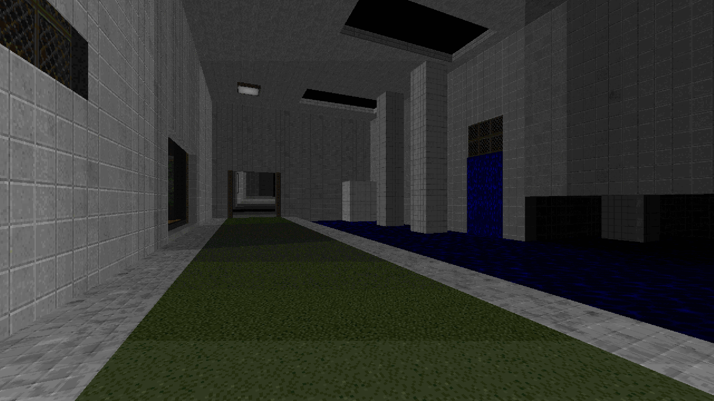
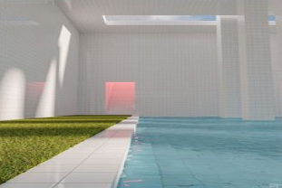
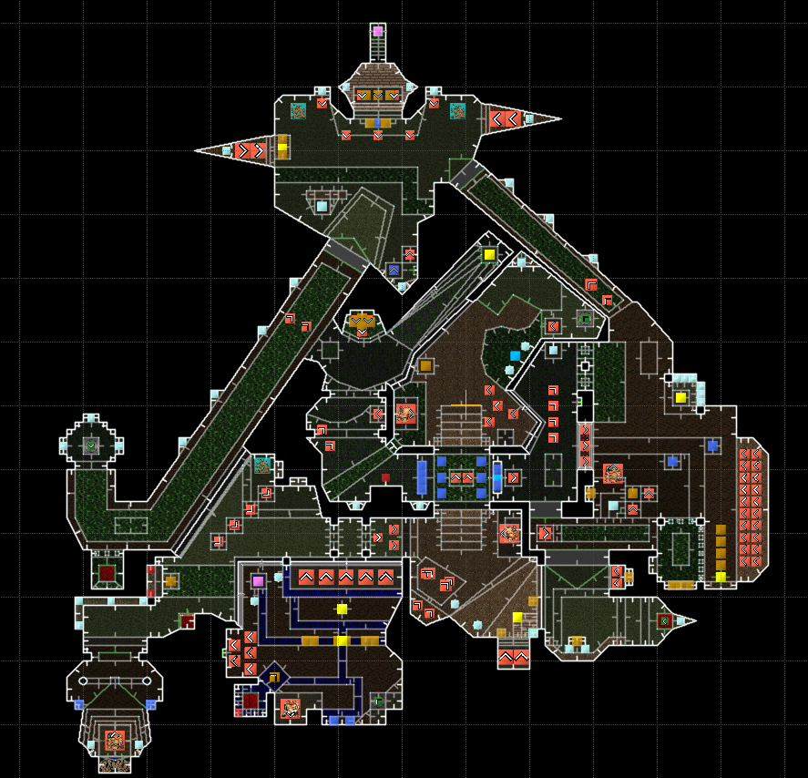
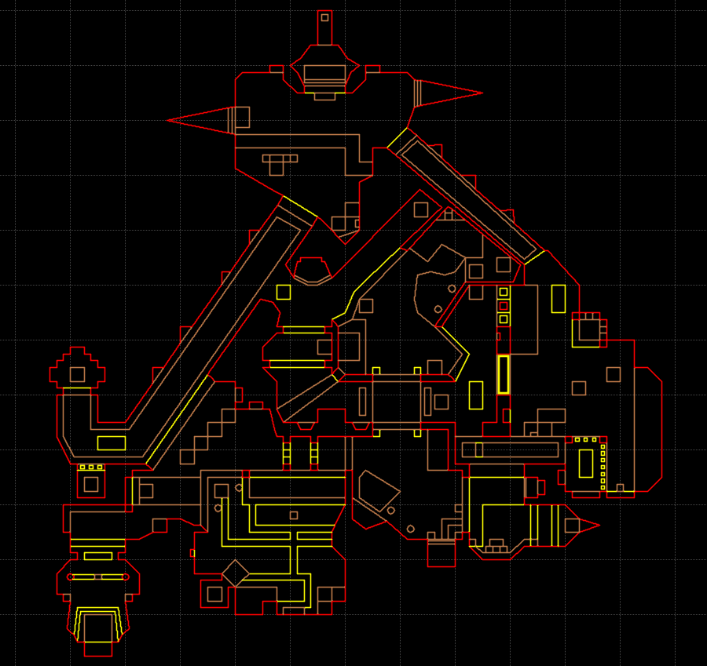

Explore and fight your way through liminal spaces themed maps inside Doom! Each map has a different kind of atmosphere and purpose, and high attention was put into balancing high energy gameplay moments with quiet ones.
Levels were created using liminal space images as references. Basically I was trying to recreate them inside DOOM, but with my own personal taste.
The following images show an example of a image used as reference and the recreation insde DOOM:


Level Showcase Video:
Details:
DOOM II mod which takes place in “liminal” themed maps.
"Dashlet's Box of Maps" were a series of mapsets I made that compiled maps of various styles, themes and gimmicks.
Most of them are quite diffculty and focus on combat. Some of them have silly jokes and weird gimmicks that pushes the game engine to its limits.


Level Showcase Videos:
Details:
Features creative usage of enemies and combat puzzles. I think of DOOM enemies like chess pieces. If you placed them in the right order you can checkmate the player.
Some maps were made between 2 to 6 hours. This is called "speedmapping", which is a good level design exercise.
Space re-usage was considered. Player revisits areas that are constantly changing. Lowering walls and ceilings, traps, enemies teleporting in, level shortcuts, etc